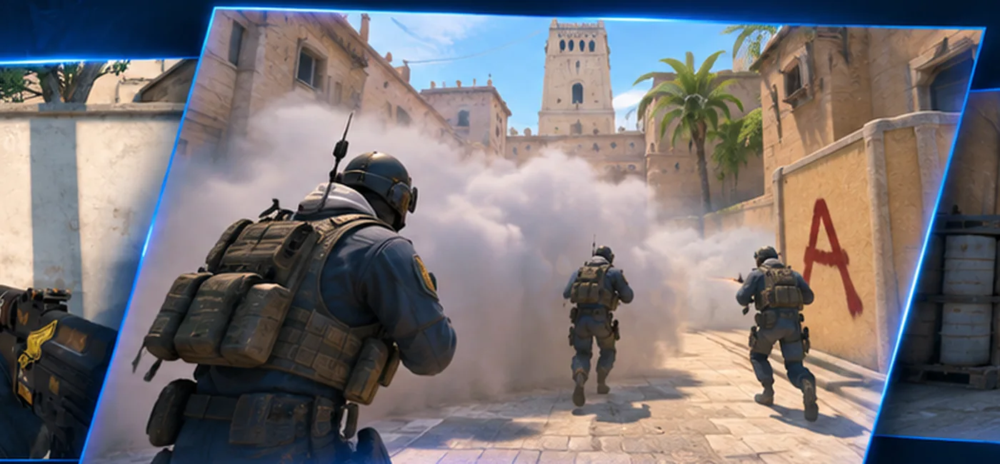

FEATURED EXPERIENCE
Game-ready tools.
Game-ready tools.
Built around the player.
Discover assistant-app listings, plan information and software access through the official Stray Bullet platform.
Explore the app catalogue